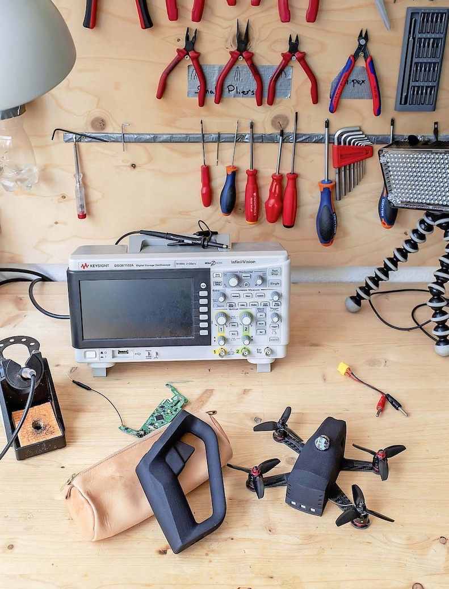
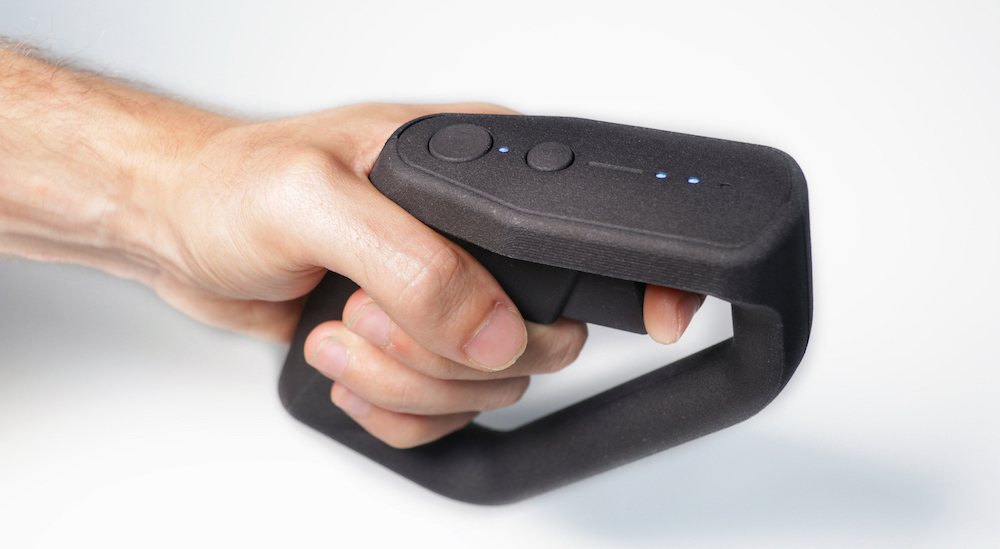
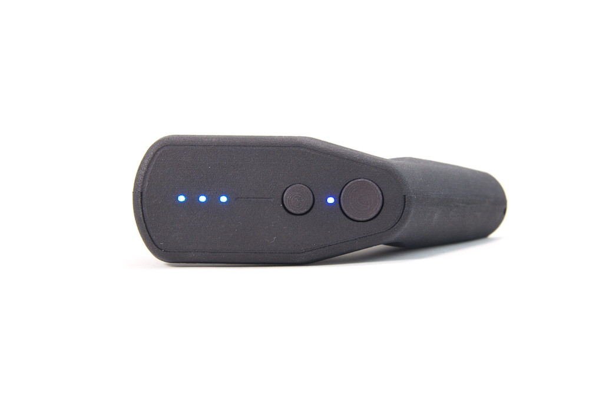
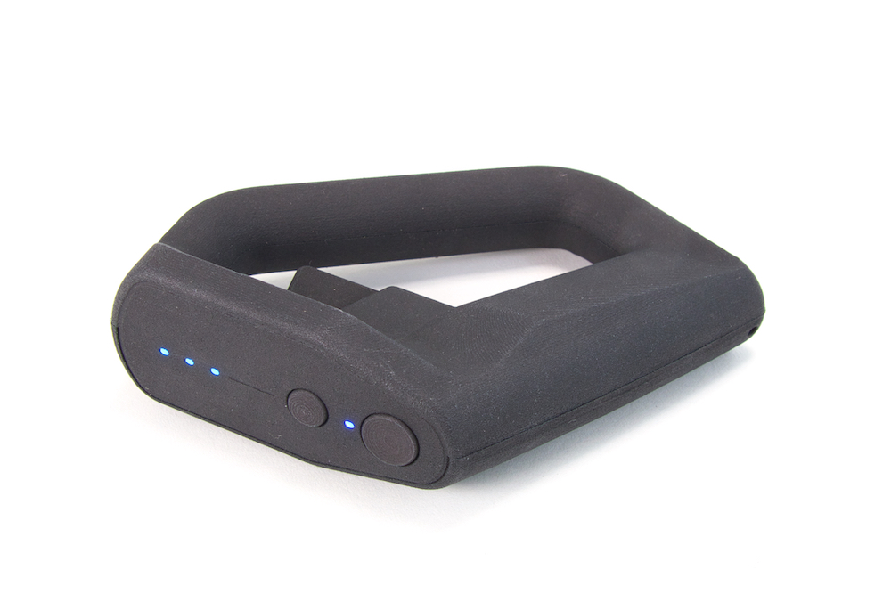
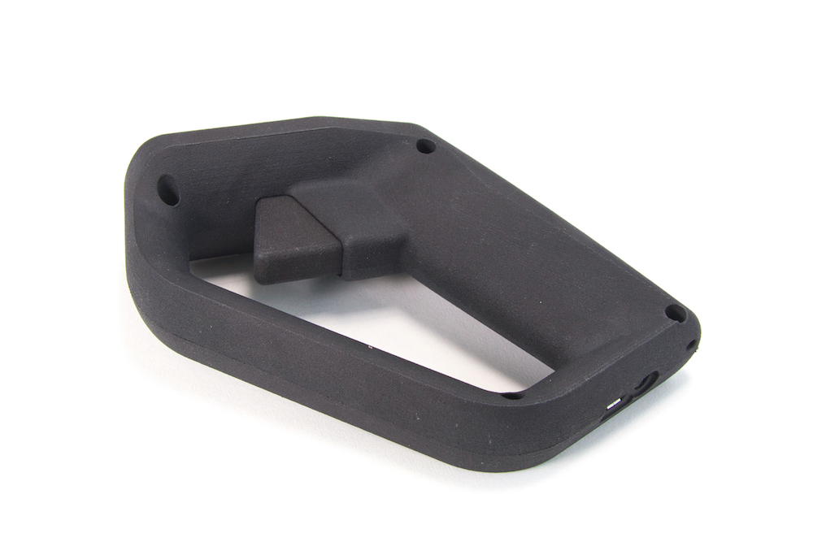

Motionpilot
Our goal with this project was to improve the flight experience of First Person View (FPV) drones that are piloted with cumbersome conventional controllers. This was achieved by introducing motion control and a user interface specifically tailored for FPV.
This project has been challenging and incredibly rewarding. It involved designing multiple prototypes, firmware revisions, electronic printed circuit boards and mechanical systems. We manufactured and assembled more than hundreds of prototypes that are still being used by our beta-testers to this day.
The hand motion is tracked using gyroscopes, accelerometers and compasses. The 9 axis are fused together to produce the controller's attitude quaternion that is then being used to define the control outputs. the trigger controls the throttle.
The main button is used to arm/disarm the drone as well as setting the controller neutral position. The secondary button is used to select one of the three flight modes.
A USB port allows to charge the battery and change the control configuration. A secondary jack connector allows to daisy chain two controllers together to teach someone how to pilot.
